12°30'N 53°55'E
Isolée depuis des millions d'années au large de la corne de l'Afrique, Socotra abrite un écosystème unique au monde, figé dans un âge géologique lointain.
Découvrir l'archipel
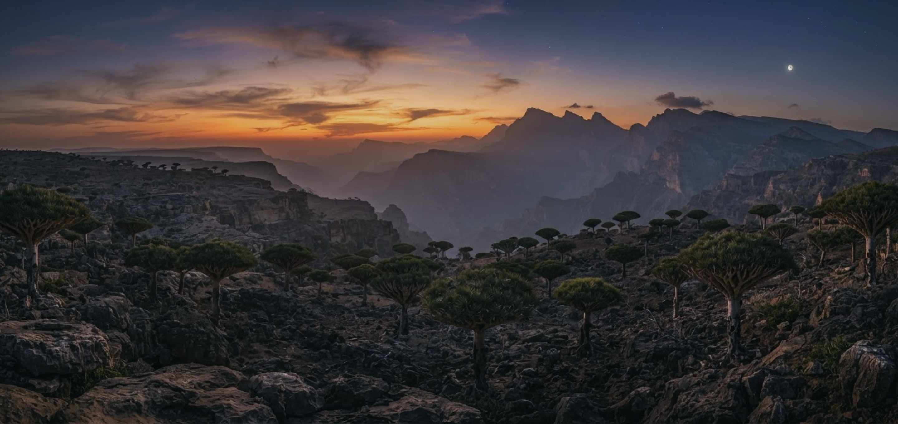
01 — RIVAGES PRIMITIFS
Reconnu en 2008 pour son importance universelle exceptionnelle, l'archipel de Socotra est un joyau de biodiversité marine et terrestre. Près de 37 % de ses 825 espèces de plantes ne se trouvent nulle part ailleurs sur le globe. Cet isolement insulaire a créé un laboratoire d'évolution à ciel ouvert.
Flore Endémique
Reptiles Uniques
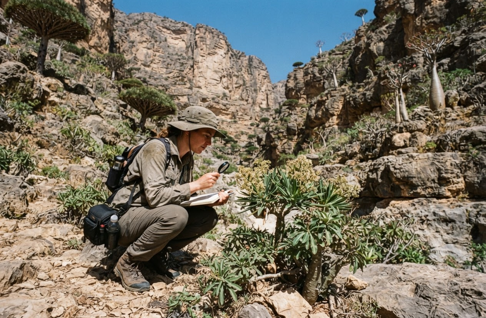
02 — ÉVOLUTION ENDEMIQUE
Façonnées par des siècles de sécheresse et des vents de mousson violents, les plantes de Socotra ont développé des structures morphologiques bizarres et fascinantes.
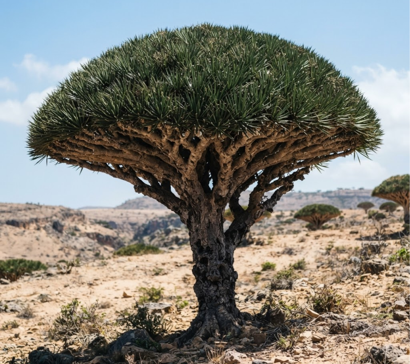
Dracaena cinnabari
L'arbre emblématique de l'île. Sa sève rouge sang, appelée 'cinabre', est utilisée depuis l'Antiquité comme pigment, médecine et élixir magique.
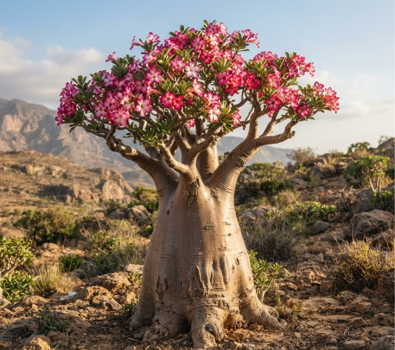
Adenium obesum sokotranum
Une silhouette bulbeuse spectaculaire stockant l'eau directement dans son tronc massif pour survivre sur les falaises de calcaire arides.
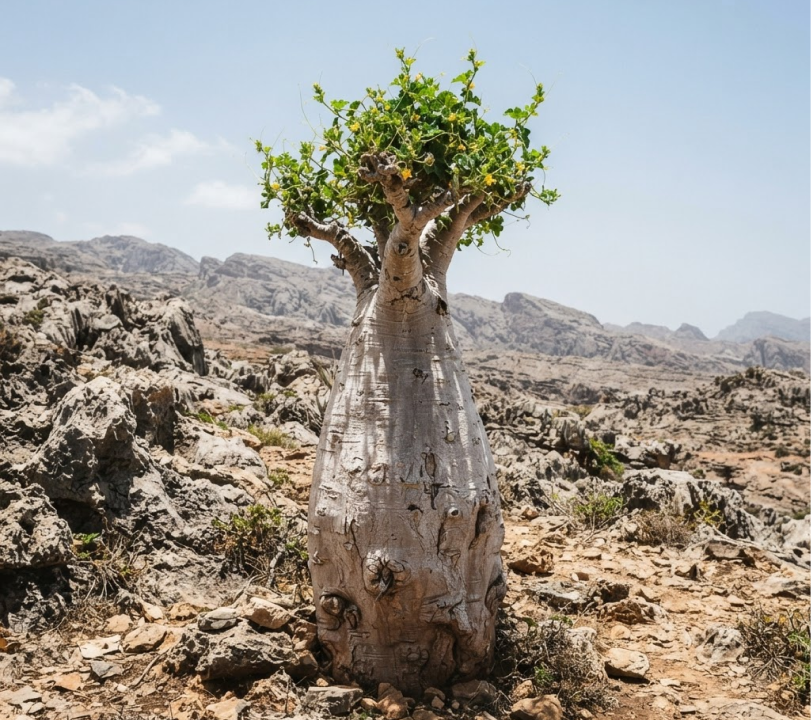
Dendrosicyos socotrana
La seule espèce de la famille des cucurbitacées qui pousse sous forme d'arbre, dotée d'un tronc charnu et de feuilles épineuses.
03 — EXPLORATION ACTIVE
Socotra ne s'observe pas passivement. Elle se traverse à pied, s'explore sous terre et s'apprivoise à travers des expéditions de bivouac minimalistes.
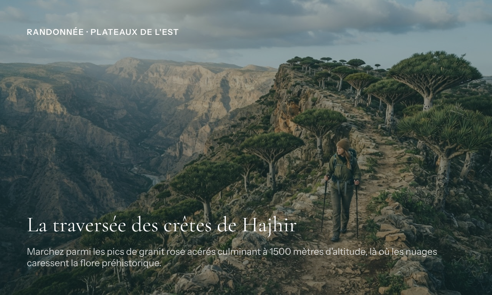
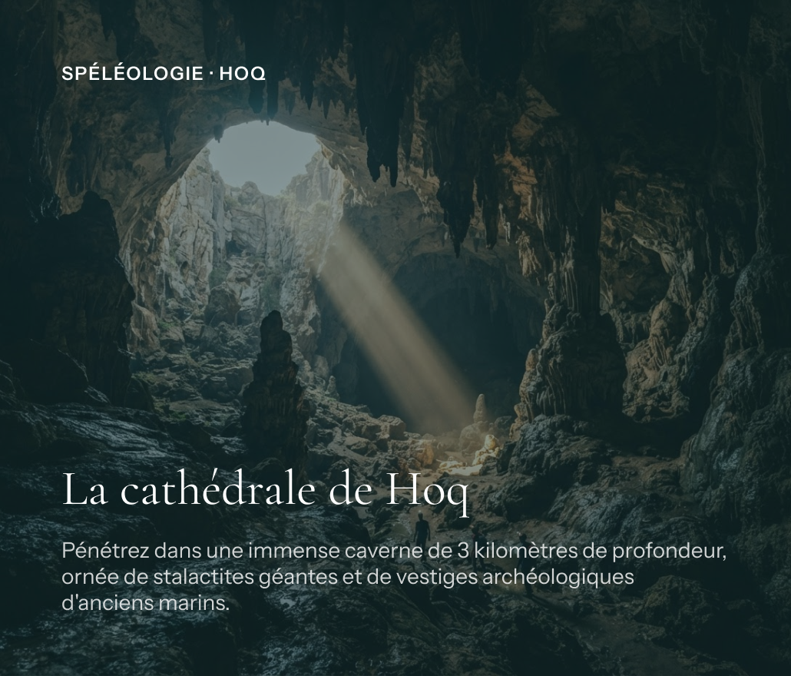
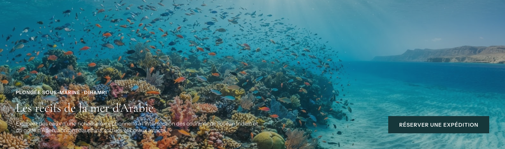
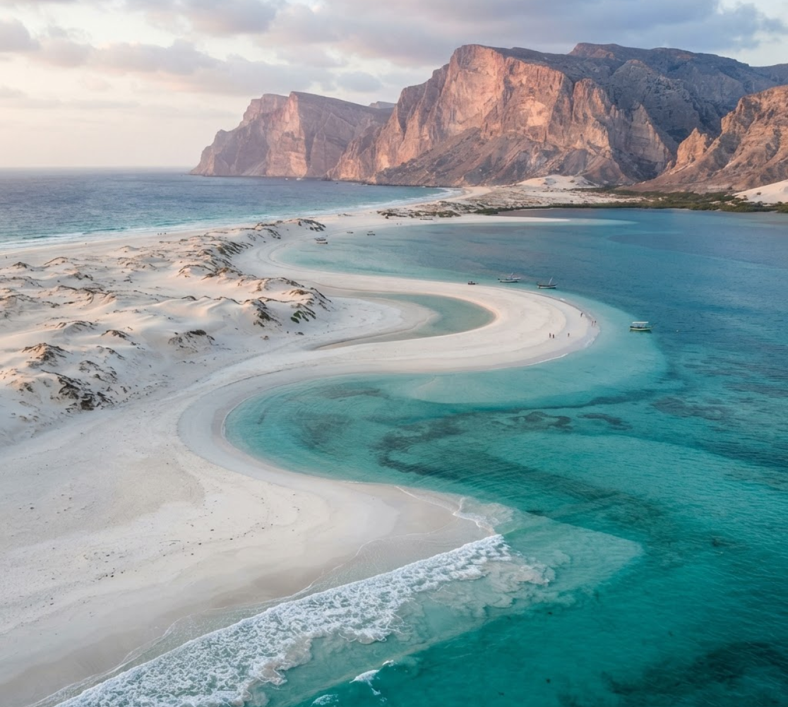
04 — RIVAGES PRIMITIFS
La plage de Qalansiyah et le lagon de Detwah offrent des paysages d'un minimalisme absolu. Le sable calcaire ultra-fin forme des langues immaculées qui se jettent dans une eau d'une clarté irréelle. C'est un espace hors du monde, habité uniquement par les oiseaux marins et les raies pastenagues.
05 — LOGISTIQUE & RESPECT
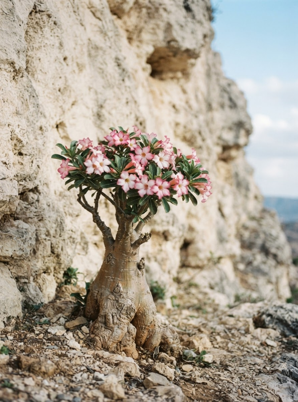
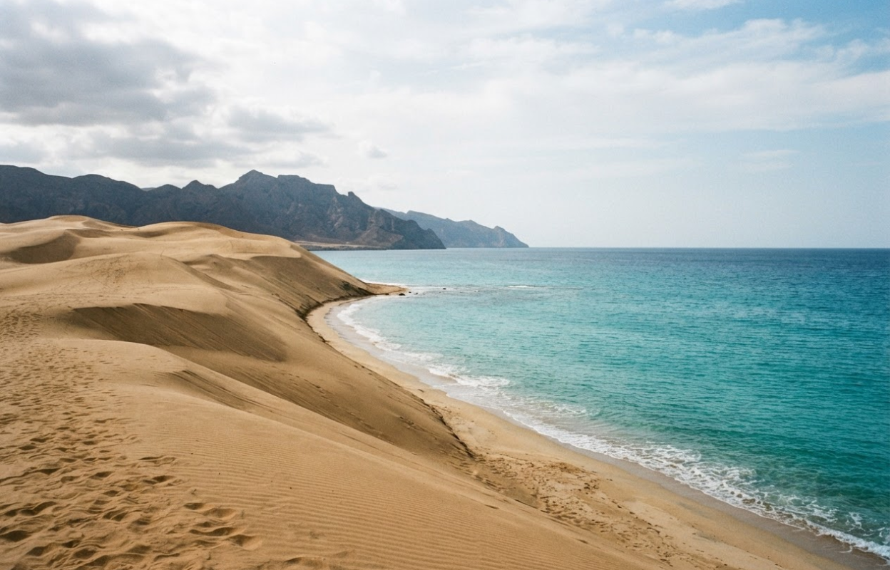
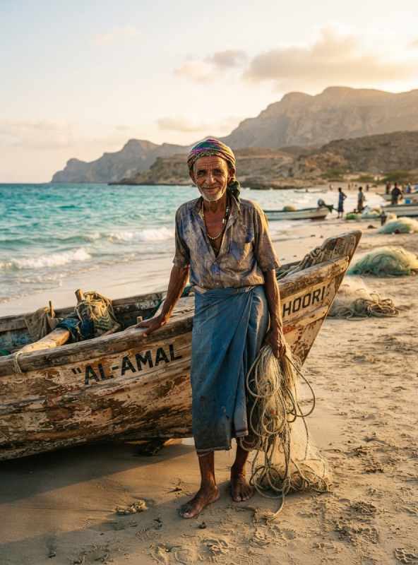
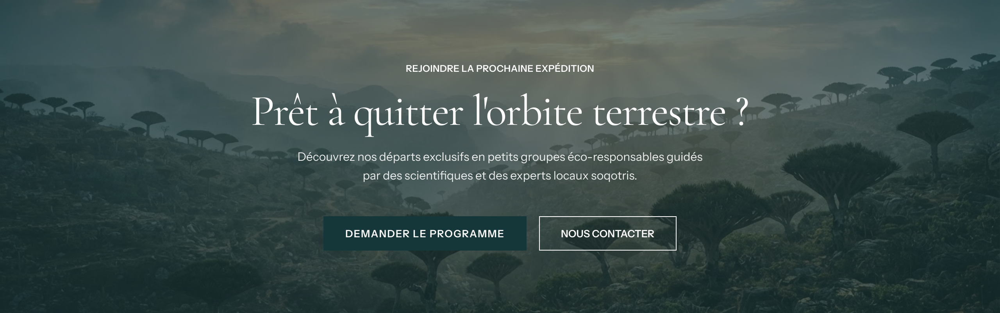
Un projet éditorial et de voyage durable dédié à la conservation et au respect de l'archipel unique de Socotra.